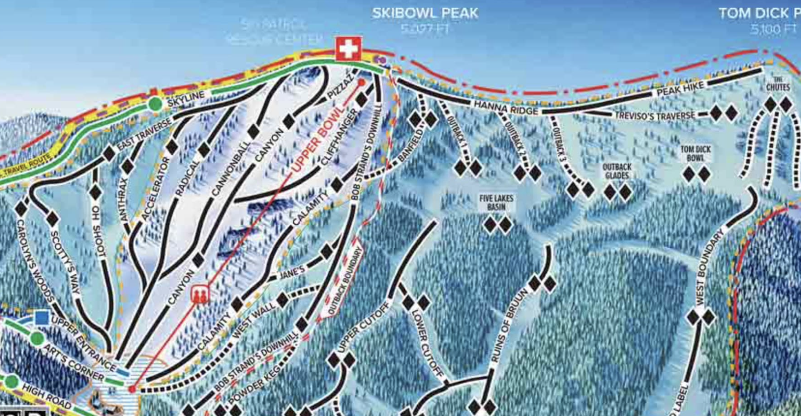
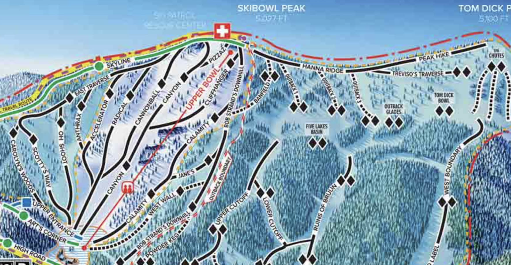

Mt. Hood Skibowl: The Ultimate Playground for Night Skiing & Adventurers
If you’re looking for steep terrain, night skiing, and an adrenaline-packed experience, Mt. Hood Skibowl is the place to be. Known as "America’s Largest Night Ski Area," this resort delivers a rugged, no-frills ski experience with some of the most exciting terrain on Mt. Hood.
A No-Frills, All-Thrills Resort
Unlike Timberline’s historic charm or Mt. Hood Meadows’ expansive terrain, Skibowl is all about steep lines, quick laps, and budget-friendly fun. The vibe is casual and laid-back, drawing a mix of locals, freestyle riders, and expert skiers looking for a challenge.
 

Terrain & Snow Conditions
Best for Advanced Skiers & Riders: With 60% of its runs rated black or double black, Skibowl is home to some of the steepest terrain in Oregon. The Upper Bowl offers incredible tree skiing, cliffs, and chutes, making it a dream for more aggressive riders.
Night Skiing Paradise: With 36 lighted runs, Skibowl offers an epic night skiing experience, making it a perfect after-work or budget-friendly option.
Snow Quality: Due to its lower elevation, snow conditions can be hit or miss, especially in warmer seasons. However, fresh powder days can be legendary.
Lifts, Crowds & Amenities
Lifts: The resort operates a few chairlifts and rope tows, making it slower than high-speed lift resorts, but the short lines often make up for it.
Après-Ski & Dining: The historic Beer Stube serves up hearty food and strong drinks, making it a favorite for après-ski.
Lodging: No on-mountain lodging, but Government Camp is just minutes away with plenty of options.
Value for Money
Skibowl is one of the most affordable resorts in Oregon, with budget-friendly lift tickets and great night skiing deals.
Final Thoughts
If you love steep terrain, night skiing, and a no-fuss, all-thrills experience, Skibowl is a must-visit on Mt. Hood.